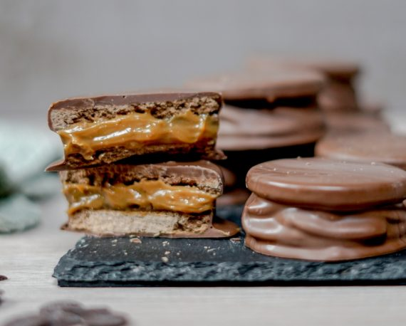

Chocolate Alfajor

These chocolate-covered alfajores are a delightful treat, featuring a soft and rich dough made with a blend of flour, cornstarch, and cocoa powder. Sandwiched between the dough is a sweet layer of delicacy (dulce de leche), and the final touch is a smooth coating of melted milk chocolate. The combination of the tender cookies with the creamy filling and the crunchy chocolate shell creates a perfectly balanced and indulgent dessert. These alfajores are a classic favorite, perfect for sharing or enjoying with a cup of coffee.
Ingredients
For the dough:
- 500g sifted flour
- 100g sifted cornstarch
- 1 teaspoon Gourmet Baking Powder
- 1 teaspoon of Gourmet Baking Soda
- 2 tablespoons of Gourmet Bitter Cocoa Powder
- 200g butter at room temperature
- 3 eggs
- 200g sifted powdered sugar
For the filling:
- 500g of delicacy
- 400g of Gourmet Milk Chocolate Coverage
Steps
- Preheat the oven to 180°C.
- For the dough, mix the flour with the cornstarch, baking powder , baking soda and bitter cocoa powder.
- Place the flour mixture on the table and make a hole in the middle.
- Place the soft butter, eggs and icing sugar in the centre. Work slowly with your fingers, from the centre outwards until a smooth, soft dough forms (this can also be done with a food processor).
- Reserve in a plastic bag or wrap and place in the refrigerator for 30 minutes.
- Remove the dough from the refrigerator, sprinkle a little flour on the counter and roll out the dough until it is approximately 1/2 cm thick.
- Using a mould or glass, cut out 5cm circles. Place them on a baking tray lined with baking paper (without butter or oil) and bake for 10 minutes. Allow to cool.
- To assemble, spread the delicacy on one side and cover with the other.
- Melt the Milk Chocolate Coating in a double boiler, stirring constantly to prevent burning. It can also be melted in short intervals in a microwave at medium power.
- Dip each alfajor in melted chocolate and let it rest on parchment paper. Once this process is complete, place it in the refrigerator for 20 minutes.
- When the chocolate has hardened the alfajores are ready to serve.